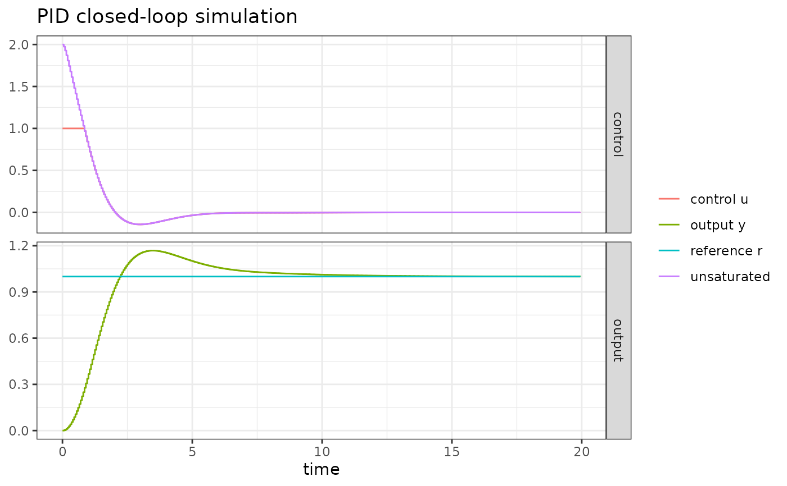

Simulate a plant under the discrete PID implementation, including
saturation, anti-windup and optional manual mode. A continuous plant is
discretized exactly with a zero-order hold at the controller sample
interval (the controller output is held between samples, as with a
digital controller and DAC); a discrete plant must have the controller's
sample interval. The measured output is the first plant output unless
output is given.
Usage
ctrl_simulate_pid(
plant,
pid,
reference = 1,
steps,
disturbance = 0,
noise = 0,
manual = NULL,
x0 = NULL,
output = 1L
)Arguments
- plant
SISO plant (or a plant whose input
inputis driven).- pid
A
ctrl_pidobject with positivedt.- reference
Reference signal: a number, a vector of length
stepsor a function of time.- steps
Number of samples.
- disturbance
Optional input disturbance (added to the plant input), same formats as
reference.- noise
Optional measurement noise, same formats.
- manual
Optional vector of manual outputs (
NAwhere automatic).- x0
Initial plant state.
- output
Index of the measured plant output.
Value
A data frame with time, r, y (measured), y_true, u,
u_unsat, P, I, D, saturated and mode, with class
ctrl_pid_simulation.
Examples
plant <- ctrl_tf(1, c(1, 1, 0))
pid <- ctrl_pid(kp = 2, ki = 0.5, kd = 1, derivative_filter = 10,
u_min = -1, u_max = 1, dt = 0.05)
sim <- ctrl_simulate_pid(plant, pid, reference = 1, steps = 400)
ctrl_performance(sim$time, sim$y, sim$r, u = sim$u)
#> IAE ISE ITAE RMSE control_effort max_abs_u max_violation
#> 1 1.793441 0.9658859 3.8725 0.2225855 1.150913 1 0
plot(sim)
